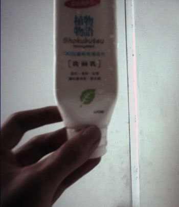
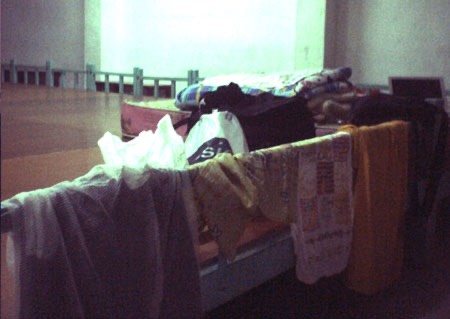

到了二結的家，衣食無缺，炎炎夏日還有冰棒可以吃，又跑去朋友家看電影-燕尾服。
晚上大概十一點左右就寢，可是直到凌晨三點我還翻來翻去的睡不著。
從十一點開始，床為鐘面，自己為指針，我以順時針方向，在床上旋轉、旋轉。
轉到兩點...還是睡不著...=.= 我發覺在這樣下去不行！明天會死。
得想個辦法才行...
所以我改以逆時鐘方向旋轉，這樣一改果然有效，我轉到三點半的時候，終於睡著了。
本來預計趁早上天氣涼快，想說五、六點左右就出發。
結果一覺睡醒，又是天殺的七點 /_\
睡眼惺忪的模樣......
去樓下沖個涼，吃兩碗稀飯當早餐。
去冰箱裡喝冰水，灌到自己喝不下之後，再裝600CC路上喝。
七點四十分，跟第一天一樣的時間，又出發上路了。
臨走前（事實上從昨天晚上開始），姨丈就一直勸我說不要騎蘇花公路，上坡很陡，騎不上去。
而且下坡很峭，如果煞不住車，會掉到山谷下去，砂石車也很多，很危險。
舉例子跟我說，有人曾經騎腳踏車走蘇花，結果騎完這麼一趟路之後，
整台腳踏車的煞車皮都磨光了，還有濃濃的燒焦味∼
看我要不要改搭火車到花蓮，然後再繼續騎下去。
我當然不肯，但是姨丈就像我的爸爸一樣，只能委婉的跟他說我會注意安全，不用擔心。
從二結-->羅東-->蘇澳，抵達時間是8:25，才騎一小時不到而已。
蘇澳有很有名的冷泉，冷泉不只是冰而已，它是碳酸水，泡起來很有趣，會起小泡泡在你身上。
夏天要排隊（家庭浴池），通常要排五個小時，才輪的到你。
情侶去洗冷泉，男生會很尷尬喔，就算是英勇魁武的男子漢去洗冷泉，
也免不了要遭受因為太冷，導致雞雞縮小的命運。 :D
但是今天沒有時間洗，繞進去拍了照片，意思意思就好。
這條河是東山河，風光明媚，沿著河往上游（還是下游），可以到清水公園，每年夏天會有童玩節。
宜蘭是不會缺水的，今年的童玩節停辦，是因為SARS的關係，不是因為沒水。
拍自己騎車時的影子，沒什麼特殊意義....
騎的正開心的時候，好死不死讓我看到路標。
它主要的意思是說；距離花蓮有136公里。（好！我們現在就搭火車回台北吧！）
往前走，右轉，就是惡名昭彰的蘇花公路，名詞解說：蘇花公路，連接蘇澳<-->花蓮的山路。
早上8:35分進入蘇花公路入口。

其實感覺上它跟昨天奮戰過的北宜公路，差異不大，只是它的上坡更陡峭，更長...更難騎。
騎北宜，等你上坡騎到快死的時候，就會適時的出現下坡，舒緩一下。
騎蘇花，等你上坡一樣騎到快死的時候，前面還一樣是上坡，不停的上坡、上坡。
等你呈現彌留狀態，看見天使在頭上飛的時候，前．面．還．是．上．坡。
從家裡裝的水，上到蘇花就喝完了，在蘇澳也沒有跟人家要水喝。
早上9:00前面看到工地，就去跟工人拉勒，然後得到了一瓶小的冰礦泉水 :P
他們說旁邊的山泉水也可以喝，我就喝了兩口，透心涼的說！
蒐集情報顯示，距離南澳還有12公里，我聽到就快起肖了，再讓我騎12公里的上坡，我這輩子看到上坡我就會怕...
但是他們說12公里是5公里上坡，7公里下坡，下坡唷！終於讓我等到了。
帶iBook環島，看起來就像這個樣子，可以把數位相機的照片存進去。
還可以在休息的時候，寫遊記，向我現在正在南澳吃午餐，就可以隨手打打字。
跟工人要完水之後，那時我已經爬坡爬得快要斷氣了，可是前面還是上坡，一點都不留情。
好加在，加油的聲音源源不絕，有小轎車會捲下車窗，跟我說加油！
還有一台小貨車後面載了四個小朋友，也跟我比『YA！』的手勢。
最後就是蘇花的名產，重型機車，車牌是黃底黑字，很大一台，還有很多是BMW的重車。
一台要好幾百萬的大玩具說，也有長髮飄逸的女騎士，跟一次好幾十台的車隊，不停的呼嘯而過。

我今天至少就看到一百台的重型機車，這是在北宜看不到的東西。
他們騎過我時，有些人會伸出左手，給我一個大拇指，然後在下一個轉彎，壓車就消失不見了。
有人加油固然開心，可是這個上坡未免也太難搞了吧，沒完沒了的說！
看到左邊就是美麗的大海，還有圓弧的水平線。
哇塞！我爬好高了說，昨天是跟雲一樣高，今天雲在我的腳下，如果前面還是上坡，
那就快要騎到火星 /_\
前面有施工，交通管制，一次只能讓一邊單線通行，我的水又喝完了。
沒水喝很辛苦，去跟指揮管制的工人求救，他也送給我一小瓶礦泉水，非常感謝。
拿到水之後，前面就是期待已久的下坡了，累積的疲勞感一掃而空！
隨之而來的是快感，跟....恐懼 >"<
好陡峭的下坡，真是驚死人，感覺腳踏車已經飆到時速80公里了。
很害怕自己在下一個轉彎處會因為煞不住車，直直的飛下山谷 T_T
一口氣，從要到水的地方，滑呀滑的，配合自己的尖叫聲，滑到了東澳，時間是早上10:00。
本來想在東澳休息，但是不怎麼累，水也還滿滿的，可是看到警察局，手就很癢。
跑過去問說可不可以裝水，警察伯伯（應該是原著民）很好心的讓我裝水，還叫我進去吹冷氣休息。
這是我長這麼大第一次鼓起勇氣去警察局要水喝 :X 利用環島訓練我的厚臉皮。
我喝光自己原有的水，再裝滿一杯帶走（可素水是溫的）。
坐在裡面裝死一下，看警察辦案。
有輛重車沒有掛車牌，被攔下來，警察說要扣車，騎士很緊張，說饒命∼
看有一次我也因為沒有掛車牌，被抓去警察局做筆錄...
看完好戲，跟警察伯伯鞠躬說謝謝。
東澳沒多做停留，想說趁太陽還不大，趕緊騎到南澳，可以吃午餐，吹冷氣休息一下。
過了警察局有看到東澳火車站，小小的東澳也有火車站，但是在施工，還沒蓋好的樣子。
剛剛被下坡陡峭的有點嚇到，輪胎好像要脫離地面飛起來似的，現在覺得平路好可愛。
平路才沒騎多久，又是天殺得，該死的，上坡、上坡、上坡、上坡。
騎了一個小時的上坡路，中間陸陸續續休息了N次。
一直騎呀騎，根本不．敢．想．像這個上坡有多長，但是跟蘇花剛開始這一段，真是有過之而無不及...
我環島沒有穿騎單車專用的安全帽、車衣、車褲、手套、鞋子。穿的跟平常上學騎車一樣。
騎到11:10，眼睛一亮，前面是隧道哩...環島的第一個隧道出現了，新澳隧道。
隧道之前有個牌子，說距離南澳還有6公里，小意思啦！
旁邊的牌子說，這個隧道有1162公尺，也就是一公里多，裡面是單行道，並且只有昏暗的小燈。
由於沒有路肩讓我閃，砂石車跟遊覽車數量又很多的驚人 /_\
有點擔心會不會不小心就被後來車給碾過去了。
把腳踏車的後車燈，弄成閃光模式，提醒後面的車子，不要A到可愛的我，會痛。
趁後面暫時沒有車流，趕快騎進去隧道裡面，才進去騎一百公尺，後面就傳來轟∼轟∼轟∼的回音。
往後一看，是砂石車逼近，車頭還裝了很多燈泡，看起來氣勢更驚人 >"<
現在我感受有如侏儸紀公園第一集，小車子被暴龍追著咬的那一段，加足油門死命的逃呀！
逃到有個比較寬的地方，就先讓車流過去，自己在驚魂未定的走∼
一公里多的單行隧道，騎完了，沒死，好險...好險...
本來想拍隧道內昏黃的照片，可是太黑了，所以相機拍不下來。
裡面就很像是廉價色情賓館那種感覺，昏昏暗暗，空氣很不好。
講到空氣，騎北宜的時候，覺得空氣很新鮮。
今天騎蘇花，一樣是山路，但是覺得空氣中瀰漫著一股海鮮腐爛的味道。
等過了臭臭的這一段，之後空氣就恢復成山中應有的清新了。
還好隧道中是緩緩的下坡，很迅速的平安通過，出了隧道，可以看到山谷中有個小鎮。
想當然爾，應該就是午休地，南澳了。
這一路到南澳都是下坡，坡度一樣蠻陡的，要小心∼∼（跟後人叮嚀）
不要想說下坡很輕鬆，就一直衝，萬一摔車的話，一定會很糟糕。
在此要跟那些幫我打氣說加油的人說謝謝，快累死的時候，聽到一句加油，
心裡感動莫名，又有踩下去的動力了。
11:25到達山腳下，機車騎士有不少也在東澳或是南澳休息，找東西吃。
我不知道要吃什麼，只希望有那種冰紅茶喝到飽的餐飲店，可是找不到。
所以改找冷氣開放的店，找到一家看起來蠻舒服的店，還有和尚在裡面吃飯 :D
所以就選這一家吃，有冷氣吹，還有舒服的桌椅讓我寫遊記。

老闆說沒有紅茶喝到飽，但是旁邊的飲水機裡的水，可以隨便我裝多少都沒關係。
點了一盤炒飯，超好吃！一般運動過後會吃不太下東西，可是我卻吃的很美味。
老闆看我騎腳踏車，還請我喝了兩碗絲瓜湯，真是感謝。
騎到這邊之後，開始會聽到路人以原住民的語言聊天溝通，蠻有意思的說！
很有到國外旅遊的那種感覺∼四周充滿了聽不懂的語言。
在餐館休息到中午12:50，想說差不多該出發了，距離花蓮還有79公里。
估計可以在晚上七點之前抵達花蓮，一切都是估計啦，腳踏車很難估計時間。
離開南澳，往前走一小段平路之後，有開始了上坡->下坡，的考驗。
不過比起宜蘭->南澳，南澳->和平這一段就溫馴多了。
上坡不會很長，等你騎到心裡想說，『累死人了，該出現下坡了吧？』，就會有下坡適時出現。
等到你心裡又想說，『滑了這麼一段，下坡應該快結束了吧？』，那下坡就沒了，又要繼續爬坡。
騎到2:10的時候，那時候我正在開心的滑下坡，有輛小貨車突然問我一句
『要不要我載你呀？』
ㄟ...應該不用，現在是下坡，我讓它自己滑就好了。
假如司機在上坡的時候，問我這個問題，我一定會痛哭流涕的感謝你。
北宜跟蘇花的另一個差異點，就是北宜很少有隧道，而蘇花的隧道很多。
從宜蘭-->南澳，這一段沒什麼隧道，只是爬坡很累。
而南澳-->花蓮，則有一大堆的隧道，一個騎完馬上又來一個，沒完沒了。
下午2:50抵達和平，在還沒抵達和平時，從山上往下看，和平給我的感覺，
就像是FF7中，那個大砲船艦都市給我的感覺，很工業化，沒什麼人氣。
等真的下到了和平，才發現果然真的是這樣。所見之處幾乎都是工廠跟大卡車，沒什麼人。
南澳餐廳裝的水已經喝完了，看到路旁又有工人，在換大卡車的輪胎，去要水喝，結果他們也沒有。
往前走過了一座橋，下橋之後有加油站，加油站裡有商店，商店裡有店員。
問店員能不能裝水喝，結果當然是可以的啦 :D
看看這個地方，有沒有像是宮崎駿-天空之城中，那個天使墜落的地點呢？

裝完水再往前走，和平有點說不出的荒涼，雖然還是有少數商店，可是卻很...殘破的感覺。
到處人都很少，商店也很少，看到一個和平車站，突然讓我想起發哥...
相機又拍滿了，休息一下存照片。
等走到一個建在大路兩旁的小鎮之後，前面有一段爬坡，踩上去就看到一個隧道。
是鼎鼎大名的和平隧道，看過單車版環島經驗的前輩說，和平隧道，騎單車者經過比死無疑。
讓我很緊張，想說裡面到底是怎麼回事.....
進去看也還好，比起新澳隧道，和平到也沒什麼好怕的。
全線都有大燈照明，不會摸黑騎的霧煞煞。
而且是雙線道，後面的車子要閃你比較容易。
不過大卡車的轟∼轟∼聲，還是一樣的令人驚心動魄 :X
下午3:55，騎呀騎，風景很美。看到了太魯閣國家公園的牌子，機不可失。
剛好有一家人在那邊休息，就請他們幫我拍照片。
休息，聊天，又往前走，前面是一堆的隧道，我今天到底經過幾個隧道，我也搞不清楚。
有印象的有『新澳』、『和平』、『仁清』、『和清』、『大清水』、『井13』、『匯德』...etc。
每個隧道的感覺都差不多，後來我終於發現，為什麼隧道內會看起來昏昏黃黃暗暗這樣。
因為我帶著太陽眼鏡，我一路都戴著太陽眼鏡，拿來當眼鏡戴，所以沒有發現...
透過太陽眼鏡不論看到什麼東西都會比較黑一點。
對不起，我誤會這些隧道了，他們其實還蠻亮的，它們其實不會暗暗...請原諒我。
環島戴太陽眼鏡，是很實際的東西！
它可以讓陽光看起來沒那麼毒辣，晴天很像是陰天那種感覺。
如此一來，即使你在大太陽底下騎車，因為看起來太陽很小，所以你的心理壓力就不會那麼大。
這對騎車人心理的感受來說，影響很大，負面的因素越多，越會讓人騎不下去，最後放棄。
4:50分，不曉得自己在哪邊，可能是位於和平跟花蓮之間吧。
口很渴，看到可愛的警察局在階梯上，好險沒有看漏，去裡面裝水喝，吹冷氣，順便洗把臉。
這次環島，我只帶了一顆肥皂，洗頭、洗臉、洗身體、洗衣服，全都要用這一顆肥皂。
結果現在警察局裡有洗面乳可以用，真是好到無話可說。

警察局可以裝水很方便，除了台灣的環島人士之外，連日本和美國來台灣環島的人，
都知道要去警察局裝免費的水喝，所以警察杯杯們都已經見怪不怪了。
只可惜警察局的飲水機，不是溫水就是熱水，沒有冰水，遺憾。
我裝完一杯600CC溫水，咕嚕咕嚕把它喝完之後，又裝滿一杯600CC要帶著路上慢慢喝。
才準備要謝人上路，好心的警察就拿了一罐冰的礦泉水給我。
有冰的東西豈可放過...又咕嚕咕嚕的喝下600CC溫水，這樣就灌了一公升多的水/_\
然後重新裝入那罐冰水。
問警察前面的路怎麼樣呢？結果是一個小上坡，一個小下坡，然後就平路直達花蓮了。
我沒在馬路上看過這個標記，台北俗，什麼東西都拍照...
5:20分抵達新城，別問我這是哪裡，我也不知道 @@" 沒有停留就繼續往前走。
從山路（懸崖）往下面看，是陡峭的岩壁以及大海，風景真的讚，邊騎邊看，很愉快。
過了一座藍色的橋，造型挺特殊的！
5:50分的時候，前方道路灰塵多的驚人，黃沙飛舞。
去前面仔細一看，原來是越野機車的練習場地，隨手拍了照片。
在礁溪跟表姊拿的免費蜜餞已經吃完，沒有東西吃的時候，嘴巴實在很無聊，而且肚子餓了。
中午那一小盤炒飯，果然太少了，讓我的肚子一下又餓了，路上有很多賣名產的。
剝皮辣椒，麻吉（曾師父的牌子好像最大），花蓮黍，玉米，烤香腸，炸雞排...
但我都不為所動呀∼想說等明天在買一包麻吉沿路吃，今天先騎到花蓮在找吃的好了，忍忍吧。
前面有檳榔西施，穿的很辣，上半身是透明的胸罩加黑色胸貼。
下半身是黑色的丁字褲（卡進去了，可以看到整個屁股 >"<），再穿透明的裙子。
我只能遠遠的拍這一張，有來到花蓮的人可以來這一家看看辣妹。
往前騎沒多久，就經過了花蓮機場，結果市區跟火車站是分兩條不同的路，一瞬間讓我傻眼。
路痴又發作了，不知道該怎麼走...（其實環島不難，一路直直走就好了）
最後決定先去市區，吃飯優先。在半路還看到一小時8元的網咖，心裡暗自計算，
等等要折返騎回來，今晚睡這裡，很便宜。
六點半，天開始黑了，到了花蓮市區（應該是吧，有點小熱鬧，可是又還好而已這樣...）
找了家飯館，還是一樣吃炒飯。
中午沒吃飽的影響讓我下午很沒力，所以這次學乖了，請他炒了一盤特大份的炒飯。
吃的很爽！！邊吃邊喝水，喝完在跟老闆娘裝水，反正水不用錢。
可是付帳的時候，眼睛有點凸出來...特大份的炒飯，要價新台幣90元，有點貴...
可是吃都吃了，不能不付錢，所以...
90元，我可以在花蓮吃肉羹麵+炸雞排+冰紅茶。
或是西瓜汁+牛肉麵。
或是排骨飯套餐+可樂...
結果只有吃到水+一堆炒飯....失策，大大的失策！！
騎車因為流汗加上髒空氣，所以臉黑黑的，用衛生紙擦過之後，整張紙變得很恐怖。
吃完飯，如果在往前走，又要進入爬山的山區了，前面沒有可以過夜的地方，所以要折返。
先去問一間國中，能不能讓我過夜，因為這是有宿舍的國中，如果能住下來的話，
洗澡跟睡覺，都會很享受，還有電視可以看...
可是那兩個擺架子的臭屁老師說不行！國中的名字，我忘記了。
貼到小鐵板，很失望，不過算了，再找找有沒有其他能住的地方。
繼續往回走，看到一家廟...好吧，去問問看。
結果廟住也說不行，沒有地方可以讓我睡覺。
那我接著問能不能讓我洗個澡呢？（我這時已經想說等一下去睡網咖，現在還是要先洗個澡）
他們說洗澡可以，去洗手台那邊吧。
因為洗手台是開放式的，所以我不敢脫光光洗，於是脫了上衣，用溼毛巾擦拭身體，還洗了頭。
順便把今天穿髒的衣服洗了一下。至於下半身...就無能為力了。
廟的名字是：仁意宮七祖仙師。雖然沒地方讓我過夜，不過洗過澡之後，舒服了一點。
洗完澡，想說該去找網咖了，又繼續往回騎，網咖還沒找到...先看到一家幼稚園。
本來想說不可能了，幼稚園怎麼會讓我住，所以過路不停。
但是才剛走，又折返騎回來，反正問問看也無訪，頂多就是不行麻，這種打擊我還承受的了 ><"
幼稚園裡面類似警衛室的地方，電視開著，桌上擺著龍眼，可是沒有人。
我在那邊等了一下，然後大喊，『有人在嗎？』，『無狼底類謀？』
然後從後方的陰影中，走出來一個穿白色衣服的老先生，我想說該講是台語的時候了。
結果等他從陰影中走出來，才發現他是外國人 :X
我開門見山就說
『我現在在騎腳踏車環島，今天晚上還找不到地方睡覺，不知道這裡方不方便讓我休息一個晚上？』
答案是『不行！』，老先生跟我說，沒有收留外人過夜的先例，而且往前走，
（就是我剛剛吃完飯的地方）就會有專業的民宿可以住。
其實我也知道有民宿可以住，可是我都已經在廟裡洗好澡了，
現在在去住民宿有點愚蠢..再說不想花這個錢。
好吧，幼稚園不行，那還是採用網咖方案吧，反正是意料中的事情。
跟老先生說了謝謝，正牽車準備要走，卻被叫了回來，他拉開幼稚園的柵欄讓我進去。
這一瞬間我真的感動的很想哭 T____T
他是個神父，這是他開的幼稚園，他來台灣已經28年了（應該吧，他自己也搞不清楚）
跟著他向裡面走去，他先帶我去看小朋友們的化妝室，裡面有廁所、洗衣機（故障）、跟洗手台。
真是太好了！等一下把門關起來，就可以在裡面脫光光正式用水管接洗手台，正式的沖各澡。
才感動到一半，他拉開另外一個鐵門，我往裡面一看，嗯∼是樓梯間。
也罷，樓梯間也可以睡人，能躺就好∼∼ :P
才這樣想，他就叫我把腳踏車牽到鐵門裡面去，說這樣比較安全，不會被偷走。
然後帶我往地下室走去，拉開門一看，嘿嘿∼你猜錯了，不是倉庫唷！
是小朋友們休息的午睡房，高級的很呢！
還有電視可以看（壞掉了），最重要的是，有冷氣可以吹呀！！！！！！！！！！
神父對我真是太好了，想要拍張他的照片，他都不好意思，我連他的名字都還不知道。
他就讓我進來睡一個晚上了....T____T
不知道怎麼跟他表達我的感謝，跟他鞠了躬，又說了很多次的『Thank you！』。
等等他要出去外面做彌撒，我就趁這個時候，把腳踏車上的包包卸下來，放到房間去。
然後拿了換洗衣物跟毛巾、牙刷和一千零一顆肥皂，要去洗個舒服的澡！
洗完之後（好涼快∼哈哈），回到午睡房，吹冷氣∼然後把剛洗好的衣服晾在床邊邊。

順便寫遊記...就是現在你看到的這篇了。
今天分兩次寫，南澳的餐廳寫一半，幼稚園的午睡房寫另一半，
現在是晚上的九點半，我差不多要睡覺了，明天真的，真的要早起！
希望可以在五點半左右就出發。
本日花費：午餐炒飯50元，晚餐炒飯90元，一共140元。
晚安。